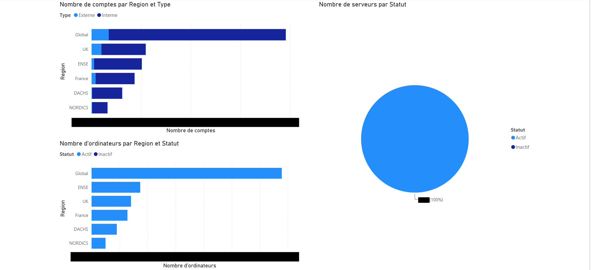
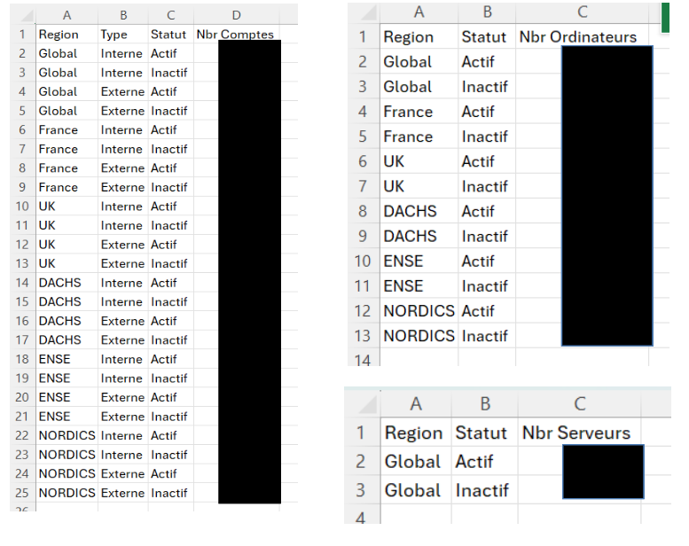

Projet de stage de 1ère année du 29/06/26 au 03/07/26
La direction IT d'Algeco souhaitait disposer d'une vue d'ensemble sur l'état des comptes utilisateurs et des ordinateurs de l'Active Directory (actifs/inactifs), répartis par région (France, UK, DACHS, ENSE, NORDICS). Cette donnée n'existait pas sous une forme exploitable pour du reporting : il fallait l'extraire manuellement de l'annuaire, sans segmentation régionale automatisée. Ce projet vise à automatiser cette extraction pour alimenter un tableau de bord Power BI.
Un script PowerShell interroge l'Active Directory pour recenser les utilisateurs et ordinateurs actifs/inactifs. Comme l'attribut c (pays) n'est pas renseigné sur les objets ordinateurs, la segmentation par région repose sur une analyse par expression régulière du DistinguishedName de chaque objet. Les résultats sont ensuite écrits dans un classeur Excel (ClasseurPwrBI.xlsx) via automatisation COM, lui-même hébergé sur SharePoint/OneDrive (INFRASecu471) et connecté à Power BI pour la visualisation.

Le script extrait les données directement depuis l'Active Directory, les structure par région et par statut (actif/inactif), puis les écrit dans un classeur Excel qui sert de source de données au tableau de bord Power BI.

Projet mené en autonomie durant le stage, avec des ajustements itératifs liés aux contraintes techniques rencontrées (attribut manquant sur les objets AD, processus Excel bloqués, migration du fichier vers SharePoint) validés au fur et à mesure avec l'équipe.